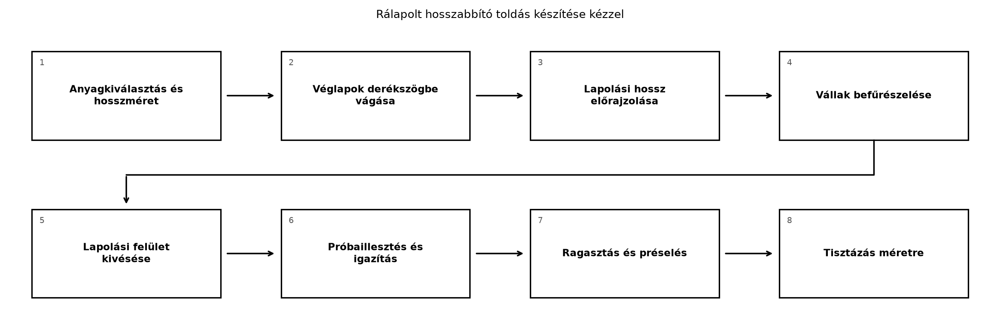
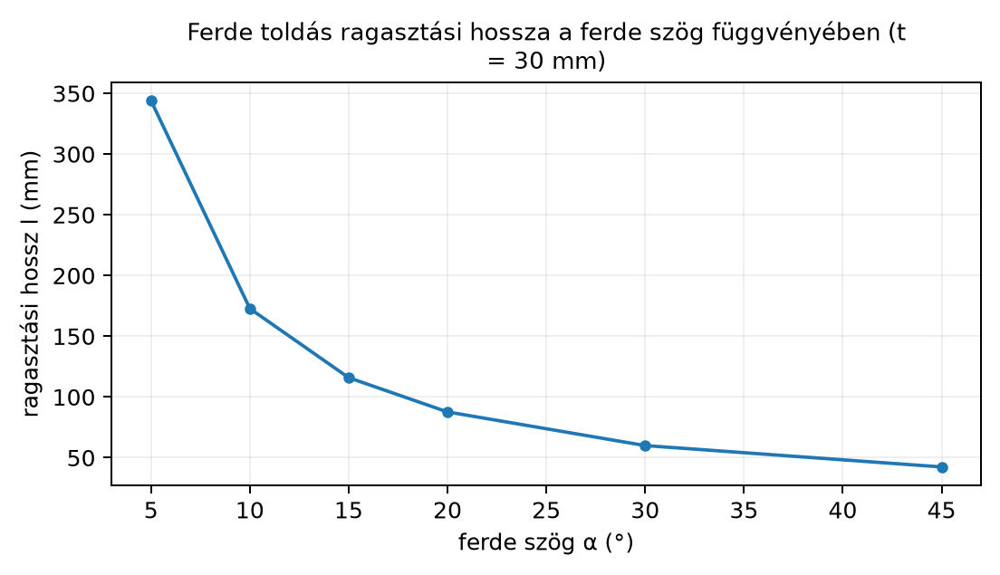

A műhelyben gyakran előfordul, hogy a kész faanyag rövidebb, mint amire a termékhez szükség van. Egy ablakkeret-fa, egy lépcsőfok vagy egy asztallap keretléce hosszú, egyenes, terhelhető alkatrész kell, de a raktárban csak rövidebb, hibamentes darabok vannak. Ilyenkor nem szabad a hibás, hosszú anyagot választani, és nem szabad a toldást elrejtve, rossz illesztéssel összeragasztani. A hosszabbító toldás arra való, hogy két vagy több rövidebb, jó minőségű darabból hosszú, szilárd alkatrészt készítsünk. Ha a toldás gyenge, az alkatrész hajlításra szétnyílik; ha rossz az illesztés, a ragasztási hézagban megtörik a felület. Ebben az alfejezetben először a kézi és gépi hosszabbító toldások készítését tanulod meg, majd az ellenőrzést és a tipikus hibákat.
Képzeld el, hogy két 25 mm vastag, 60 mm széles bükk lécet kell egy 1,2 m-es keretlábbá toldani. A toldás ne a szem előtt lévő homlokfelületen legyen, hanem ferdén fusson, hogy a ragasztási felület nagyobb legyen. A ferde toldás hossza a ferde vágás szögétől függ: minél laposabb a vágás, annál hosszabb a ragasztófelület, és annál erősebb a kötés. A kézi rálapolt toldás lépéseit az alábbi folyamatábra mutatja.

Definíció. Hosszabbító toldás a faanyag rostirányú, mechanikai vagy ragasztott egyesítése, amelynek célja a szükséges hossz elérése. A toldás lehet rálapolt, egyenes élillesztésű, ferde élillesztésű vagy gépi fogazott (ékcsapos) toldás.
Definíció. Rálapolt hosszabbító toldás: a toldandó darabok végén az anyagvastagság felét kivéve egymásra lapolva készítjük el (a két darabból kivett rész összege a teljes vastagság; ritkán az egyikből 2/3, a másikból 1/3), ragasztással és gyakran csavarral vagy facsappal is rögzítve.
Definíció. Egyenes élillesztés: a toldandó darabok véglapjait derékszögben, a rostirányra merőlegesen vágjuk le, és a két homlokfelületet ragasztjuk össze. Gyenge kötést ad, ezért csak kis igénybevételű, rejtett helyen vagy átmeneti megoldásnál használjuk.
Definíció. Ferde élillesztés: a véglapokat a rostiránnyal hegyesszöget bezáró síkban vágjuk le, ezáltal a ragasztási felület megnő, és a kötés hajlításra is kedvezőbb.
Szabály. Ferde illesztés hossza. A ferde vágás ragasztási hosszát a
összefüggés adja, ahol az alkatrész vastagsága mm-ben, a ferde vágás rostiránnyal bezárt szöge, a vágási felület hossza mm-ben. A gyakorlatban a ferde toldás aránya legalább 1:6–1:8 legyen (tájékoztató érték, szabvány vagy gyártói előírás felülírhatja – ellenőrizendő); az 1:6 azt jelenti, hogy a ferde vágás hossza () a vastagság () legalább hatszorosa.
Az ábra a fejezet két számpéldáján mutatja, mi a , az és az a lécen: a 30 mm-es lécen 15°-os vágás csak kb. 116 mm-es (rövid) ragasztási felületet ad, a 28 mm-es lécen az 1:7-es arányhoz kb. 8,2°-os, lapos vágás és 196 mm-es felület tartozik. A HTML-változatban a vastagság és a szög csúszkával állítható.
Definíció. Gépi ékcsapos (fogazott) toldás: a toldandó végeken géppel, profilmaróval egymásba illeszkedő, ék alakú fogakat marnak, majd a fogazott felületeket ragasztóval összepréselik. Nagy ragasztási felületet ad, és az illesztés önközpontosító.
Az egyenes (tompa) bütütoldás (más néven egyenes véglap-illesztés; nem azonos a 18.2 élillesztésével) csak akkor ajánlott, ha a toldott alkatrészt mechanikai kötőelem (pl. facsap, lamelló, heveder) is erősíti. A ragasztott homlokfelület kicsi, mert a fa homlokfelülete gyengén ragasztható.
A ferde bütütoldás (ferde élillesztés) készítésekor a ferde vágást kézi fűrésszel, szögbeállítós gérvágóval vagy asztali körfűrésszel készíthetjük. A ferde szöget mindkét darabon azonos módon, pontosan kell beállítani, mert a két vágásnak tökéletesen egybe kell esnie. Ragasztás előtt a ferde felületeket frissen vágottan, portól és zsírtól mentesen kell összeilleszteni.
A gépi fogazott toldásnál a toldandó darabok végeit fogazómaróval profilozzák. A fogak alakja és osztása a szerszám gyártójától függ; a gép adagolhatja a darabokat kézzel vagy automatikusan. A fogazott felületek egyikére ragasztót visznek fel, majd a két darabot hosszirányú présben, ütközők között szorítják össze. A préselési nyomás és idő a ragasztótól és a fog geometriájától függ (tájékoztató: a zárónyomás a fog hosszától függ, nagyságrendje több N/mm², a préselési idő néhány perc – ellenőrizendő: gépkönyv, ragasztó adatlap, MSZ EN 15497).
Gépbiztonság. Gépi fogazott toldást csak betanított, felügyelt tanuló végezhet. A védőburkolat, a szerszámrögzítés és az elszívás működjön. A munkadarabot a gép adagolórendszerével vagy tolófával vezesd, kézzel soha ne érj a forgó szerszám közelébe. Szerszámcsere, beállítás és tisztítás előtt a gépet áramtalanítsd, és várd meg, amíg a szerszám teljesen leáll.
A gépi fogazott toldás előnyei: - nagy és pontosan illeszkedő ragasztási felület, - alaktartó, magas szilárdság, - gyorsan, sorozatban gyártható, - a toldás helye szinte láthatatlan lehet, ha a fogazás finom.
Alkalmazása: ablakfák, ajtókeretek, ragasztott tartók, lépcsőfokok, bútorlécek, ahol hosszú, egyenes, terhelhető tömörfa alkatrész kell.

1. példa. Egy 30 mm vastag tölgyfa lécet ferde élillesztéssel toldunk. A ferde vágás a rostiránnyal 15°-os szöget zár be. Mekkora a ragasztási felület hossza?
Keresett: . Képlet: . Behelyettesítés: , , .
Ellenőrzés: , vagyis 1:3,9 – ez a gyakorlati 1:6–1:8 aránynál jóval rövidebb, csak kis igénybevételű toldásra elég; teherhordó léchez 7–9,5° körüli szög kell (lásd a 2. példát).
2. példa. Egy ajtókeret-léc vastagsága 28 mm. A gyártó a ferde toldási arányt legalább 1:7-re írja elő. Mekkora legyen a ferde szög, hogy a ragasztási hossz legalább 7 × 28 mm = 196 mm legyen?
Keresett: . Képlet: . Behelyettesítés: , .
Ellenőrzés: 8° körüli, lapos ferde vágás hosszú ragasztási felületet ad; ez megfelel a húzó-hajlító igénybevételű keretléceknek. A pontos szöget a gyártói előírás vagy a szabvány határozza meg.
Továbbvitt eredmény. A hosszabbító toldással készült egyenes, méretpontos léc vagy keretfa lesz az alapanyag a keretkötésekhez: a Sarokkötések lapolással és vállazással, az Ollós csapozás: 90°-os illesztés, 1/3 és 2/3 aljazás és a Vésett csapozás: szakállas, átmenő, T-kötés; hevederek alfejezetben ezekből a toldott darabokból készítünk keretkötéseket. A toldás minősége meghatározza a keret stabilitását, ezért a toldást mindig a keretkötés elkészítése előtt, síkra gyalultan kell beépíteni.
Rálapolt hosszabbító toldás készítése kéziszerszámmal
Cél: Két rövid tömörfa darab egyesítése hosszabb, egyenes, húzásra és hajlításra is megfelelő alkatrésszé.
Anyagok: Két azonos fafajú, vastagságú és szélességű, hibamentes léc; D3-as faragasztó (ellenőrizendő: gyártói adatlap); nedves törlőrongy.
Szerszámok: Hátfűrész vagy finom fogazású fűrész, véső (a lapolási szélességhez illő, éles), derékszögelő, mérővonalzó, előrajzoló bicska vagy ceruza, csavaros szorító, gyalupad.
Egyéni védőeszközök: Védőkesztyű (nem forgó gépnél), védőszemüveg a fűrészelésnél, munkaköpeny; elszívás nem szükséges kézi munkánál, de poros vésésnél porálarc ajánlott.
Indítás előtti ellenőrzés: A véső éles, a fűrészlap nem rozsdás, a szorító pofái párhuzamosak, a munkadarab nincs csavarodva vagy repedve.
Lépések:
Dokumentálás: Jegyezd fel a ragasztó típusát, a préselési időt, a toldás méretét és az esetleges javításokat.
A toldott alkatrészt szemrevételezéssel, derékszögelővel, mérővonalzóval és egyenes vonalzóval ellenőrizzük. A toldás vonalán ne legyen 0,1 mm-nél nagyobb hézag (tájékoztató, a termékosztálytól függ – ellenőrizendő). Az alkatrész ne legyen csavarodott, hajlott; az egyenesség eltérése 0,3 mm/m alatt legyen (tájékoztató). A ragasztási hézagban ne legyen száraz, kimaradt ragasztó vagy idegen anyag. A rálapolt toldásnál a vállak zárjanak, a gépi fogazott toldásnál a fogak teljesen illeszkedjenek. Eltérésnél a toldást bontani vagy javítani kell; ha a hézag nagyobb, a darabot újra kell toldani.
Egy asztalos egy 2,4 m hosszú tölgyfa ablakszelvényt rendelt, de a raktárban csak 1,2 m-es hibamentes darabok voltak. A szelvényt gépi fogazott toldással készítette el: a végeket fogazómaróval profilozta, a fogazott felületre D4-es ragasztót vitt fel, majd hosszirányú présben szorította össze. A toldás után a szelvényt 24 órán át pihentette, majd gyalulta és csiszolta. A kész szelvény egyenes volt, a toldás a profilban alig látszott, és a beépítés után is megtartotta a méretét. A tanulság: a gépi fogazott toldás akkor ad jó eredményt, ha a darabok vastagsága pontosan egyezik, a ragasztó a fogak teljes felületét fedi, és a préselés a fogazás irányában történik.
1. feladat (A)
Írd le a rálapolt hosszabbító toldás készítésének lépéseit 4–6
pontban.
2. feladat (A)
Számítsd ki a ferde illesztés ragasztási hosszát, ha a vastagság 25 mm
és a ferde szög 12°!
3. feladat (B)
Egy 32 mm vastag keretlécet ferde toldással készítünk. A gyártó előírása
szerint a ragasztási hossz legalább 8 mm legyen 1 mm vastagságra.
Mekkora legyen a ferde szög?
4. feladat (B)
Két bükk lécet (60 mm széles, 30 mm vastag) gépi fogazott toldással
egyesítünk. A fogak a 60 mm-es oldalon futnak, osztásuk 4 mm, hosszuk 8
mm. Hány mm² a fogoldalak ragasztási felülete, és hányszorosa ez a sima
bütüfelületnek? (A fogcsúcs és a lejtés hatását hanyagold el.)
5. feladat (C)
Miért nem elég az egyenes élillesztés egy húzott-hajlított keretlécnél?
Javasolj megoldást, és indokold!
6. feladat (D)
Készíts technológiai lapot egy ferde élillesztésű toldás készítéséhez,
kézi szerszámokkal, 20 mm vastag és 50 mm széles fenyőléchez! Add meg a
lépéseket és az ellenőrzési pontokat!
Önellenőrzés – válaszok
1. feladat megoldása
Lépések: (1) anyagkiválasztás, (2) véglapok derékszögbe vágása, (3)
lapolási hossz előrajzolása, (4) vállak befűrészelése, (5) lapolási
felület kivésése, (6) próbaillesztés, (7) ragasztás és préselés, (8)
tisztázás.
2. feladat megoldása
,
,
.
.
3. feladat megoldása
Előírt arány:
,
tehát
.
.
.
4. feladat megoldása
A bütüfelület:
.
Fogak száma:
;
minden osztásban 2 fogoldal van, egy fogoldal felülete
,
így
,
ami a sima bütüfelület kb. négyszerese. A fogazott toldás ezért ad nagy
ragasztási felületet (a fogcsúcs és a lejtés elhanyagolva).
5. feladat megoldása
Az egyenes élillesztés homlokfelületi ragasztása gyenge, mert a
homlokfelület erősen szívó, és a ragasztási felület kicsi. Húzó-hajlító
igénybevételnél a toldás könnyen szétnyílik. Megoldás: ferde élillesztés
(nagyobb felület) vagy gépi fogazott toldás, esetleg rálapolás
mechanikai erősítéssel. Így a ragasztási felület nő, és a kötés
szilárdsága eléri a tömörfa szilárdságát.
6. feladat megoldása
Technológiai lap (tömör): - Cél: ferde élillesztésű toldás 20 mm vastag,
50 mm széles fenyőléchez. - Anyagok: két fenyőléc, D3 faragasztó
(ellenőrizendő), nedves rongy. - Szerszámok: gérvágó fűrész vagy
állítható szögű fűrész, gyalupad, derékszögelő, mérővonalzó, csavaros
szorító, csiszolópapír. - Lépések: (1) a végeket derékszögben levágni;
(2) a ferde szöget mindkét darabon beállítani (pl. 8°, 1:7 körüli arány,
mm); (3) a ferde felületeket frissen vágottan, portól mentesen
összeilleszteni; (4) ragasztót felvinni az egyik ferde felületre; (5) a
darabokat összeilleszteni és szorítóval, középen nyomva préselni; (6) a
préselési idő letelte után a kinyomódott ragasztót letörölni, majd a
toldott lécet méretre gyalulni és csiszolni. - Ellenőrzési pontok: a
ferde szög pontossága, a toldási hézag zártsága, az egyenesség, a végső
méret.
A hosszabbító toldás a faanyag rostirányú egyesítése a szükséges hossz elérésére. A rálapolt toldásnál a végeken lapolási felületet készítünk, és ragasztással, gyakran mechanikai erősítéssel kötjük össze. Az egyenes élillesztés csak segédelemekkel használható, mert a homlokfelületi ragasztás gyenge. A ferde élillesztés nagyobb ragasztási felületet ad; a vágási hossz az képlettel számítható, és a gyakorlati arány 1:6–1:8 (tájékoztató). A gépi ékcsapos (fogazott) toldás profilozott fogakkal nagy szilárdságú, alaktartó, sorozatgyártásra alkalmas, és elsősorban ablakszelvényekhez, keretlécekhez, ragasztott tartókhoz használjuk. A toldott alkatrészt egyenességre, méretre, hézagmentes illesztésre és szilárdságra ellenőrizzük. A helyesen elkészített toldott léc lesz a keretkötések alapanyaga a Sarokkötések lapolással és vállazással alfejezetben.
A fejezet a hazai faipari szakmai gyakorlatra, az MSZ EN ISO 19085 sorozat gépbiztonsági előírásaira (a pontos számok és a hatályos változat ellenőrizendő), a ragasztókra vonatkozó MSZ EN 204 osztályozásra (D1–D4 – ellenőrizendő) és a faipari szakrajzi szabványokra épül. A ferde toldás 1:6–1:8 aránya, a préselési nyomás- és időadatok, valamint a fogazott toldás paraméterei tájékoztató értékek, amelyeket az aktuális szabvány, a gépkönyv és a ragasztó gyártói adatlapja felülírhat. A gépi fogazott toldás szerszámgeometriája és a préselési nyomás a gyártótól függ, ezért az adott berendezés dokumentációját mindig ellenőrizni kell.